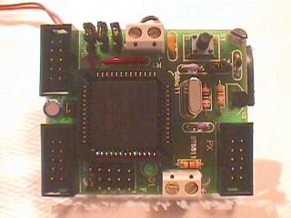
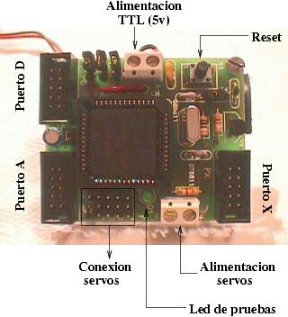
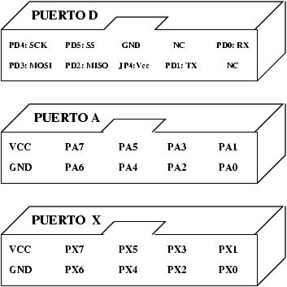
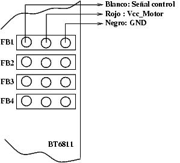

| TARJETA BT6811 |
| [Introducción] | [caracteristicas] | [Autores] | [Licencia] | [Historia] | [Puertos] | [Alimentación] | [Software] | [Download] | [Links] | [Noticias] | [Agradecimientos] |

La BT6811 es una tarjeta basada en el Microcontrolador 68hc11 de Motorola. Su objetivo es controlar de forma autónoma cuatro servomecanismos, permitiendo una conexión sencilla de los mismos y facilitando su alimentación.
Para desarrollar esta placa se ha partido de la Tarjeta CT6811, de la que se han eliminado los siguientes elementos: Max232, los puertos B, C, Control, el jack de alimentación, los switches de configuración y algunos jumpers.
Se han introducido los siguientes elementos nuevos: una clema para la alimentación de los servos, un jumper para que la alimentación de los motores sea la misma que la de la lógica, cuatro conexiones directas para servos y un puerto mixto, que saca al exterior el puerto C y el E.
Se trata de una placa MULTIPLATAFORMA, que se puede usar tanto en máquinas Linux como Windows.

El primer prototipo de la BT6811 se creó en Febrero de 1999 para controlar de una manera sencilla los 8 motores de Puchobot, el robot Perro que estaba diseñando Andrés para su proyecto fin de carrera.
Las pruebas realizadas con el primer prototipo fueron un éxito y su autor decidió sacar una tirada industrial. El nuevo prototipo de Puchobot tendría que controlar 12 motores, usando 3 tarjetas BT6811 y una CT6811 como maestra.
Juan González encontró que esta placa se adaptaba perfectamente a su idea de crear un robot gusano modular y expandible (CUBE).
Se sacó una tirada inicial de 30 PCB's, financiada al 50% por Andrés y Juan.
La BT6811 se ha utilizado en los siguientes proyectos:La tarjeta BT6811 dispone de 3 puerto de expansión, que se muestran en la siguiente figura:

Los conectores para los servos son:

La alimentación nominal es de 4.5-5.5 voltios, a través de una clema. Para los servos hay que emplear una tensión de 5v, que se introducen a través de otra clema diferente. La alimentación independiente de los servos es opcional. Es posible alimentar el conjunto electrónica + servos únicamente a través de la clema de la lógica TTL y colocar el jumper JP5.
Se recomienda utilizar alimentacione separadas, aunque para hacer pruebas puede resultar útil el utilizar solo una única alimentación de 5v.
En el 6811E2 de la BT6811 hay que grabar un programa servidor, que recibe comandos por el SPI y posiciona los servos. Puesto que se pueden conectar en red, cada BT6811 debe llevar un servidor diferente, que reconozca las tramas que van destinadas a él. Los nodos tienen las direcciones 'A', 'B', 'C',... El servidor que sirve de base es el futA.asm (Para el nodo 'A'). Los demás son iguales cambiando la dirección de cada nodo.
El software que se ejecuta en el nodo maestro depende de la aplicación.
Para el control de 4 servos desde el PC, hay que utilizar una BT6811, una CT6811 y usar el programa XBT6811
| TARJETA BT6811 |
| bt6811-manual.pdf (120KB) | Manual de usuario de la tarjeta BT6811 |
| bt6811-manual-src.tgz (63KB) | Fuentes del manual en Lyx, y figuras en Xfig |
| bt6811.sch (7KB) | Esquemático, para ORCAD |
| bt6811.pcb (18KB) | PCB, hecho en TANGO 2.11 |
| bt6811.net (3KB) | Netlist, para Tango 2.11 |
| SOFTWARE PARA EL 6811 |
| FutA.asm (12KB) | Programa servidor para el E2 de la BT6811 (Fuentes) |
| FutA.s19 (690 Bytes) | Programa servidor para el E2 de la BT6811 (Ejecutable) |
| SOFTWARE PARA LINUX |
| Programa XBT6811. Visitar este enlace |